Earth Restoration
Earth Restoration is dedicated to regenerating ecosystems, restoring biodiversity, and empowering communities to create a sustainable and thriving planet for future generations.
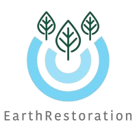
Supported by the LifeForce CPES Model
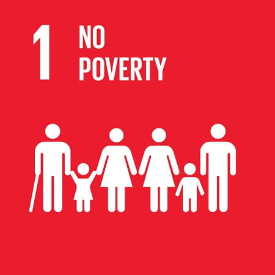
EarthRestoration contributes to this goal by creating value for Primary Ecosystem Services (PES). This allows for an increase in the value of rural product and for the capitalization of Ecosystem Services that can reward participating individuals.
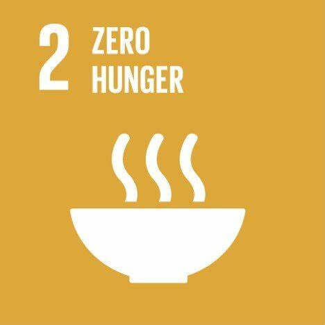
ER focusses on landscape restoration based on perennial crops and in the creation of advanced agricultural landscapes, where biological ambient cooling is used to avoid high temperature crop loss. We contribute to the security of agriculture production by mitigating heat stress.
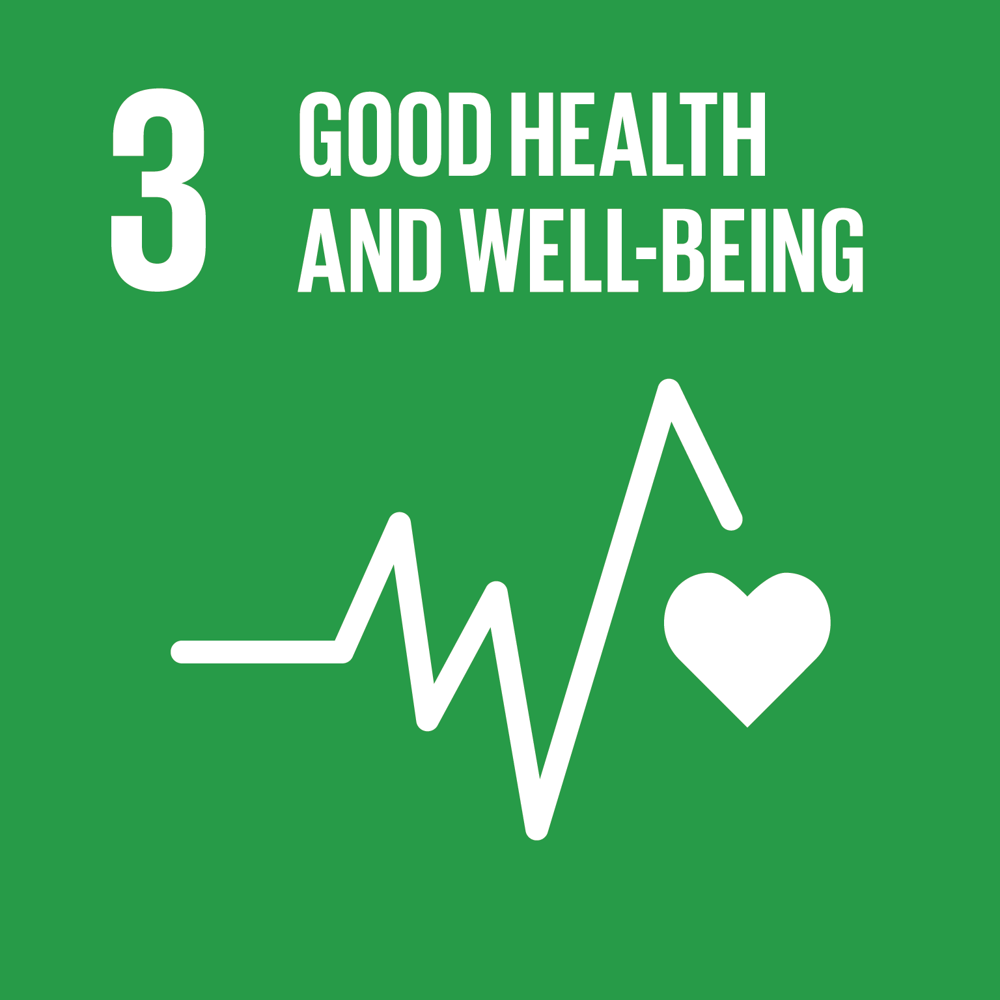
Plant derived evapotranspiration is the largest producer of clean water on land. ER measures and pays for the generation of evapotranspirative clean water, because contaminated groundwater is filtered and facilitated through the tree.
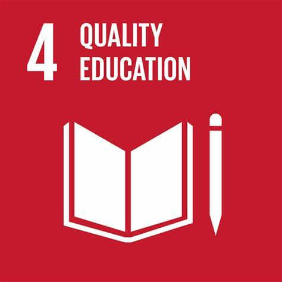
ER supports the research and technologies required to assess volumes and quality of different pools of photosynthetic Biomass. We encourage and promote the generation of essential knowledge & learning systems that will enable students to respond to the imaging needs of monitoring and reporting.
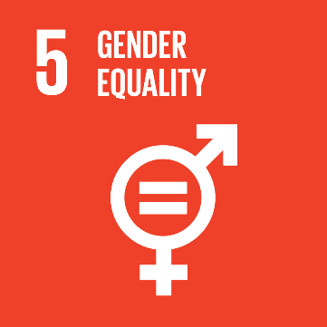
ER solutions such as ‘LifeForce Units’ allow for an increased proportion of the household income to be generated by biomass, providing non-gender biased income. Earth Restoration solutions provide payments for tending to crop trees during their non-productive early stages of growth.
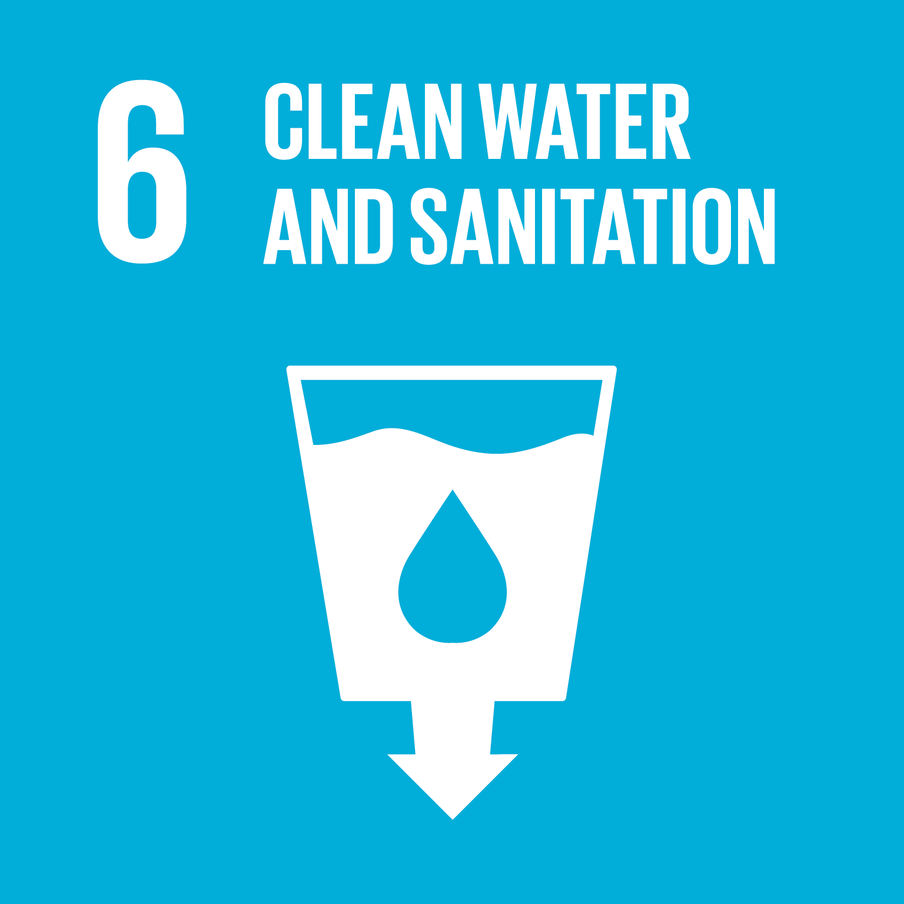
Plant derived evapotranspiration is the largest producer of clean water on land. ER measures and pays for the generation of evapotranspirative clean water, because contaminated groundwater is filtered and facilitated through the tree.
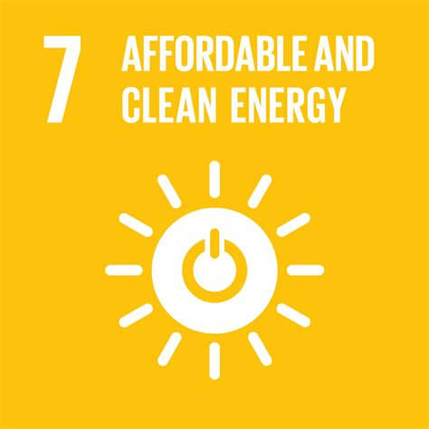
Biomass is a non-fossil, solid, transportable energy source that is the carbon alternative to ‘fossil’ in generating energy. Our actions respond to this goal by increasing the production of biomass and subsequent production of PES.
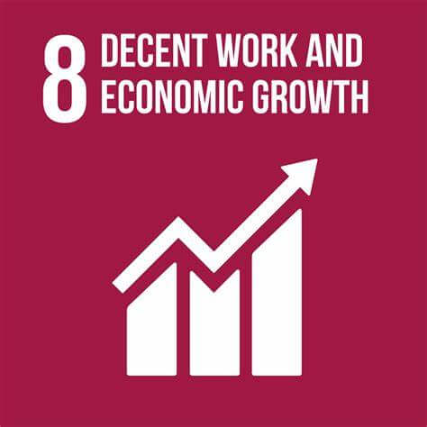
image of decent work and economic growth The ER economy provides for sustainable income to be generated from a rural home environment thus reducing the need for travel, and contributing to a new measure of economic growth.
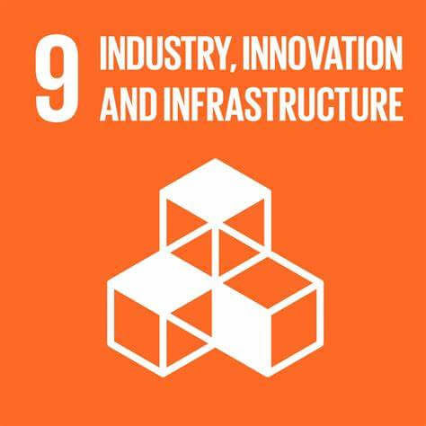
ER monitoring technologies demand new and innovative designs in both equipment and software, to provide timely reporting to existing scientific, financial, as well as social institution created for the transaction of PES into a global system.
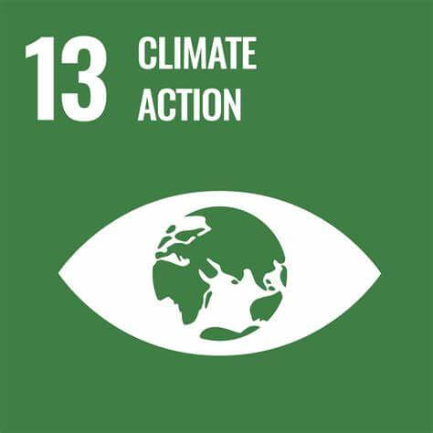
EarthRestoration by promoting value in increasing biomass contributes to the sequestration and removal of atmospheric carbon, a stated goal in climate action. It also increases PES that contributes to maintaining cooler ambient temperatures – an essential agricultural need in a future warming climate.
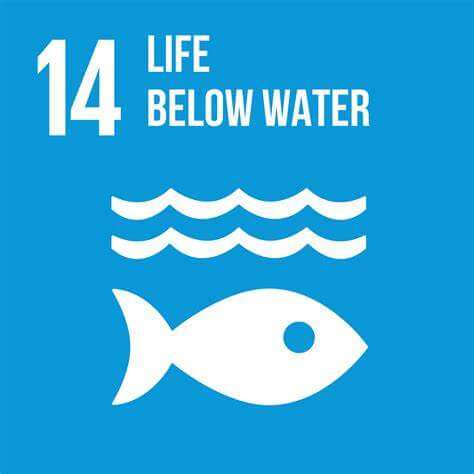
PES Units placed in Analog Forest or similar systems will clean and filter surface water to provide a benign aquatic environment within watersheds. All terrestrial pollutants ultimately end up in the surface waters. Well placed UNITS can reduce these toxic loads by over 80%.
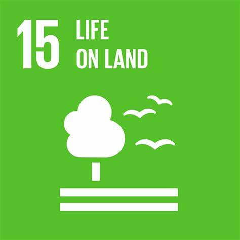
EarthRestoration solutions are designed to increase the output of PES in terrestrial landscapes with diminishing sustainability. PES units also provide for an increase in soil organic matter and also provides habitat for biodiversity.
Earth Restoration is dedicated to regenerating ecosystems, restoring biodiversity, and empowering communities to create a sustainable and thriving planet for future generations.
EarthRestoration, All rights reserved.
Designed By Digital Technology Partner Elzian Agro